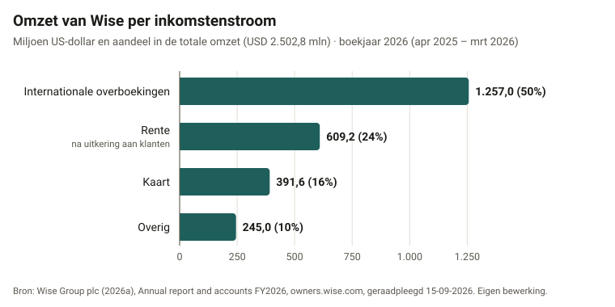

De cijfers
Waar verdient Wise aan, en hoe groot is de voorsprong nog?
Twee grafieken uit openbare bronnen. De eerste laat zien dat de omzet van Wise afhangt van klanten die blijven en geld laten staan. De tweede laat zien dat Wise veel goedkoper is dan een bank, maar dat overheden en concurrenten dat verschil kleiner willen maken.
Grafiek 1: de helft van de omzet komt uit één product

- Titel
- Omzet van Wise per inkomstenstroom
- Eenheid
- miljoen US-dollar (USD), met aandeel in de totale omzet
- Periode
- boekjaar 2026 (1 april 2025 tot en met 31 maart 2026)
- Bron
- Wise Group plc (2026a), Annual report and accounts FY2026, owners.wise.com/static-files/8a520d4d-373b-4058-b288-1757bf067c04, geraadpleegd op 15 september 2026
Toon de cijfers als tabel
| Inkomstenstroom | USD miljoen | Aandeel |
|---|---|---|
| Internationale overboekingen | 1.257,0 | 50% |
| Rente na uitkering aan klanten | 609,2 | 24% |
| Kaart | 391,6 | 16% |
| Overig | 245,0 | 10% |
| Totaal | 2.502,8 | 100% |
Ook als bestand, met bron per regel: data/grafiek-1-omzet-per-inkomstenstroom.csv
Wat zie je?
Van elke dollar die Wise verdient, komt ongeveer de helft uit internationale overboekingen. Bijna een kwart is rente over het geld dat klanten op hun rekening laten staan. De kaart en overige diensten zijn samen ook ongeveer een kwart.
Wat betekent het?
De twee grootste blokken hangen allebei af van klanten die bij Wise blijven. Een klant die vertrekt, neemt zijn overboekingen mee én zijn tegoed, en daarmee de rente. Omdat overstappen bijna niets kost, is klantbehoud voor Wise dus belangrijker dan het lijkt. Daar komt bij dat de rente buiten de macht van Wise ligt: in boekjaar 2026 groeiden de tegoeden met 40%, maar de rente-inkomsten met maar 6%.
Beperkingen
- De percentages zijn zelf berekend als aandeel van de totale omzet van USD 2.502,8 miljoen. Door afronding tellen ze op tot 100%.
- De rente is het bedrag ná uitkering aan klanten. De bruto rente-inkomsten zijn hoger.
- Het gaat om één boekjaar. Hoe de verdeling over meerdere jaren verandert, laat deze grafiek niet zien.
- Het jaarverslag komt van Wise zelf. De cijfers zijn wel gecontroleerd door een accountant.
Grafiek 2: Wise is veel goedkoper dan een bank, maar het doel komt dichterbij

- Titel
- Wat kost het om geld naar het buitenland te sturen?
- Eenheid
- kosten als percentage van het verstuurde bedrag
- Periode
- derde kwartaal 2025 (Wereldbank); eerste kwartaal boekjaar 2027, april tot en met juni 2026 (Wise)
- Bronnen
- World Bank (2025), Remittance Prices Worldwide Quarterly: Issue 54, remittanceprices.worldbank.org, geraadpleegd op 15 september 2026; Wise Group plc (2026b), Wise Q1 FY27 trading update, owners.wise.com/news-releases, geraadpleegd op 15 september 2026
Toon de cijfers als tabel
| Aanbieder | Kosten | Wat is gemeten |
|---|---|---|
| Banken | 14,99% | gemiddelde kosten voor USD 200, Q3 2025 |
| Wereldgemiddelde | 6,36% | gemiddelde kosten voor USD 200, Q3 2025 |
| Volledig digitale aanbieders | 3,54% | gemiddelde kosten voor USD 200, Q3 2025 |
| Wise | 0,50% | gemiddelde vergoeding over alle overboekingen, Q1 boekjaar 2027 |
| Doel VN en G20 voor 2030 | 3,00% | streefwaarde, geen meting |
Ook als bestand, met bron per regel: data/grafiek-2-kosten-overboeking.csv
Wat zie je?
Een bank rekent gemiddeld bijna 15% voor een overboeking van 200 dollar. Volledig digitale aanbieders zitten op 3,54%, en de gemiddelde vergoeding van Wise is 0,50%. De stippellijn is het doel van de VN en de G20: gemiddeld 3% in 2030.
Wat betekent het?
Tegenover een bank heeft Wise nog een groot prijsvoordeel. Maar overheden willen dat iedereen goedkoper wordt, en de digitale aanbieders zitten al dicht bij het doel. Hoe dichter de rest bij Wise komt, hoe minder de prijs alleen een reden is om voor Wise te kiezen. Wise verlaagt zijn vergoeding zelf ook (van 0,58% naar 0,50%), dus de marge om nog goedkoper te worden wordt kleiner. Dat is de reden dat het advies niet alleen op prijs leunt.
Beperkingen
- De staven meten niet precies hetzelfde. De Wereldbank meet de kosten van één overboeking van USD 200, inclusief de opslag op de wisselkoers. Het cijfer van Wise is het gemiddelde over alle overboekingen, ook grote bedragen, waar het percentage lager uitvalt. Voor 200 dollar ligt het percentage bij Wise dus waarschijnlijk hoger dan 0,50%.
- De metingen komen uit verschillende periodes: de Wereldbank uit Q3 2025, Wise uit april tot en met juni 2026.
- De Wereldbank meet vooral routes naar lage- en middeninkomenslanden. Voor routes binnen Europa liggen de kosten anders.
- De 3% is een doel en geen gemeten waarde.
- Meer over de begrippen en perioden staat op Achtergrond.